Tour operator website, package CMS and AI-assisted enquiry inbox. Technical Design Document.
The client loses an estimated 48 bookings a month (₹4.37 lakh in margin) because a quarter of web enquiries wait more than 12 hours for a reply, and pays ₹3,000 and 3 days for every package or price change. This build attacks both:
Beyond the core slice it also ships the rest of the CMS the brief asks for: a journal (blog) CMS whose posts carry package cards and related trips, so readers are led to the right package; team management for admins; and an Old URLs screen where editors import the old site’s links as permanent redirects. Plus quotes as a branded web link and PDF, a traveller account, signed preview links for the MD, an activity log, sitemap and structured data, and a measured page load under 2.5 s on throttled 4G.
| Decision | Why |
|---|---|
| Next.js 16 App Router, one deployable | The brief needs server-rendered, fast, crawlable pages and a secure admin. One TypeScript codebase does both; server components keep data access on the server, and server actions give typed mutations without a separate API layer. One deployable keeps hosting cheap for a 48-person company. |
| Static generation + incremental revalidation for public pages | Package and destination pages are generated as HTML and cached at the edge. Publishing calls revalidatePath, so a price change is live in seconds; a 60-second revalidation window lets scheduled versions go live with no cron job. Measured median LCP is 1.9–2.3 s on throttled slow 4G (section 6). |
| SQLite dialect via libSQL + Drizzle | The reviewer runs it with zero services (a local file); production uses Turso with the same SQL. Drizzle gives typed queries and plain SQL migrations. The data set (60 packages, 2,400 enquiries a month) is small; Postgres would add operations cost without benefit at this size. |
| Own session auth | Four roles and simple email + password do not justify a third-party identity provider. Sessions are random 256-bit tokens; only their SHA-256 is stored; cookies are httpOnly, SameSite=Lax, Secure in production; passwords use bcrypt. |
| Pure domain modules | Pricing, seasons, the reply clock, versioning, search and the AI are plain functions with no database or framework imports, so they are unit-tested directly (84 tests) and reused on server and client. The price shown in the browser calculator, in the reply draft, in the quote and in the PDF all come from one priceParty(). |
| Redirects in the proxy, from the database | The old site’s URLs must keep their Google ranking, and the client has 140 of them to load and maintain without a developer. The Next.js proxy checks every request against an in-memory copy of the redirect table (refreshed every 30 seconds) and answers with a 308, counting hits. If the table is unreachable it simply lets the request through. |
| Rules engine first, LLM optional | See section 4. It runs free, offline and deterministically; personal data never leaves the system unless the client opts in to an LLM. |
| Table | Key fields | Notes |
|---|---|---|
| users | email, name, password_hash, role (admin | editor | consultant | traveller), active, last_assigned_at | Staff accounts are seeded or created by an admin; public sign-up always creates travellers. |
| sessions | id = sha256(token), user_id, expires_at | Raw token only in the cookie. |
| packages | code (PKG-KL-07), slug, archived | Stable identity; the slug is locked after first publish so URLs never break. |
| package_versions | package_id, kind (draft | release), version_no, content JSON, visibility (public | hidden), publish_at, note, author_id | One editable draft per package; every publish adds an immutable release. Content is validated by a Zod schema. |
| media | bytes, mime, width, height | Uploads, resized to WebP in the browser, served with year-long cache headers. |
| enquiries | ref (ENQ-10015), channel, package_id, traveller_id, contact, message, form fields, consent_contact, consent_whatsapp, status, assigned_to_id, extraction JSON, confirmed JSON, first_reply_at, due_at | extraction keeps what the AI read; confirmed keeps consultant corrections on top, so both stay auditable. |
| enquiry_events | type (received, ack, ai, note, reply, status, assign, quote, correction), body, actor | The enquiry timeline. |
| messages | channel (email | whatsapp), to, subject, body, kind (ack | reply) | The simulated outbox; nothing leaves the system. |
| quotes | ref, token, package + version id, travel date, party, price JSON, valid_until | Pinned to the exact package version quoted, so later edits never change a sent quote. |
| blog_posts | slug, draft JSON, published JSON, publish_at, author_id | Saving edits the draft; publishing copies it across, so a live post never shows half-finished edits. A post never yet live can be scheduled. |
| redirects | from_path (normalised), to_path, hits, last_hit_at | Old-site URLs; hit counts show which old links still bring traffic. |
| audit_log, counters | actor, action, summary · name, value | Activity log; atomic reference numbers. |
The live version is computed, not stored: among releases whose publish time has passed, the highest version number wins; if it is hidden, the package is offline. Consequences, all unit-tested:
The brief asks the AI to extract dates, travellers, destination and budget, suggest three packages and draft a reply, with corrections beside the original, nothing sent without a person, and prices never from the AI. The pipeline:
LLM_* variables are set, any OpenAI-compatible model is asked for the same fields as JSON, validated by Zod, and merged field by field: if they agree, confidence rises; if they disagree, the field is flagged with both readings; a value found only by the model is kept at reduced confidence, and lower still if it cannot be found in the message text, which guards against invented details. Timeouts and errors fall back silently to the rules result.priceParty(); a unit test checks that every ₹ amount in a draft matches a price-table calculation.Sample from the brief. “2 adults and 1 kid, Kerala 5-6 nights in December, budget around 1.2 lakh total, houseboat a must” extracts every field correctly (budget at 90% confidence), ranks PKG-KL-07 first (score 95), and prices it for 2 adults + 1 child in peak season at ₹81,250 + 5% GST ₹4,063 = ₹85,313, within the budget. The draft asks the child’s age and exact dates. All of this is asserted in tests.
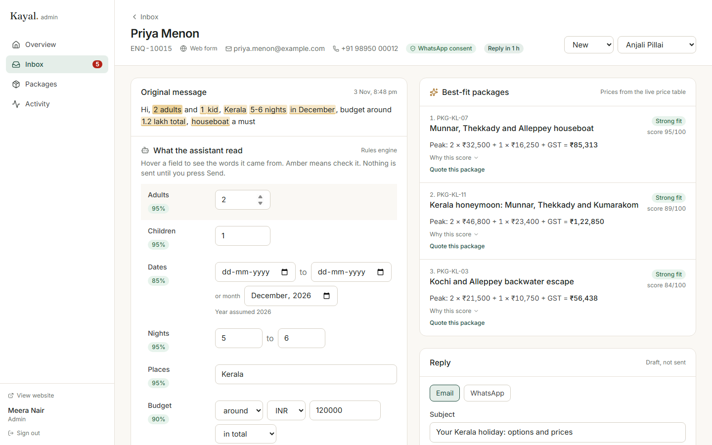
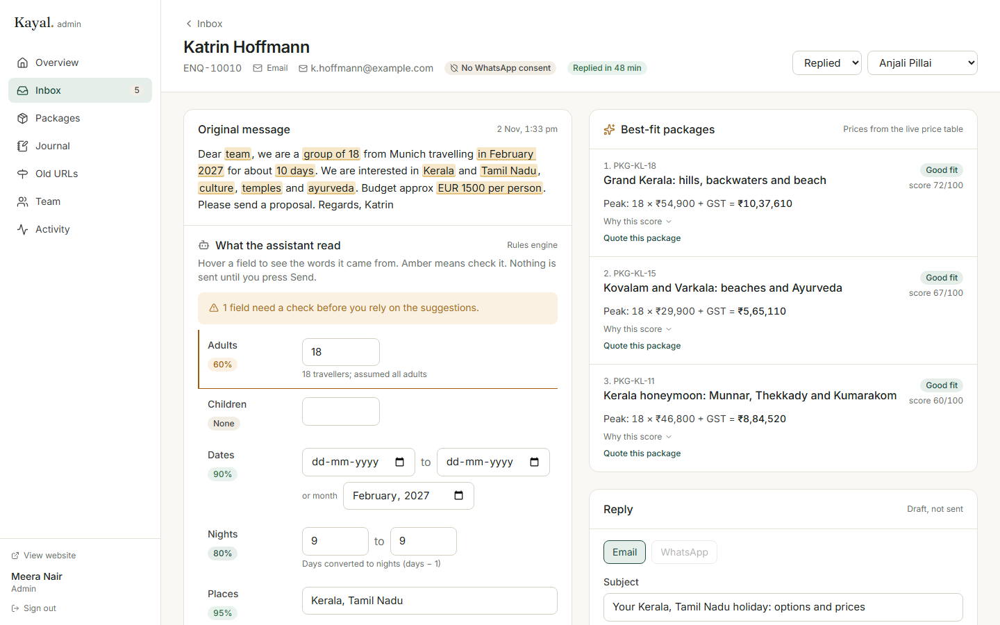
| Flow | Steps |
|---|---|
| Traveller enquires | Package page → Enquire (the one primary button; sticky on phones) → form with consent and optional WhatsApp consent → server validates (Zod, honeypot, 5 per 10 min per IP) → enquiry stored, extraction run, consultant assigned, acknowledgement sent from a fixed template, reply due time set → thank-you page with reference and expected reply time. |
| Other channels | Staff “Log an enquiry” for calls and pasted chats; /api/inbound/whatsapp|email|chat webhook (shared secret) for simulated providers. Same pipeline as the web. |
| Consultant replies | Inbox (Open / Mine / Unassigned / Closed, search, channel filter, live timers) → enquiry → check amber fields → confirm → pick from suggestions → edit draft → Send (email, or WhatsApp if consented) → first-reply time recorded, status Replied. Optional quote: package + date + party → priced from the table → link + PDF. |
| Editor changes a price | Packages → package → Prices (season cards with gap and overlap checks) → Save draft (Ctrl+S) → Preview → Publish… (diff against live, warnings, now or scheduled, change note) → public page revalidated. |
| New package | New package (code, title, region) → editor checklist lists what is missing (summary, photos, prices, itinerary length…) → publish when the list is clear. Or Duplicate an existing package. |
| Editor writes a post | Journal → New post → write with the formatting toolbar and live preview → place a package card in the text where readers should act → “Suggest from the text” proposes related packages (the inbox’s matching engine run on the prose; the editor chooses) → checklist (cover, excerpt, length, at least one related package) → Publish now or schedule. Each package page lists the posts that link to it (“Read before you go”). |
| Old URLs | Old URLs → paste the crawl as two columns → Check list shows, row by row, what will be imported and what is skipped and why (dead target, chain, duplicate, or an old URL that would hide a live page) → Import. Targets that later disappear (a package unpublished) are flagged red. |
| Team | Team → add a person with a role; a one-time password is shown once to pass on privately. Change roles, reset passwords, deactivate. Nobody can deactivate or demote themselves and one active admin always remains; deactivation signs the person out at once and returns their open enquiries to the unassigned pool. |
| Traveller account | Register → enquiries sent while signed in appear in “Your trips” with replies and quotes. Enquiries are not linked by email address, so nobody can see another person’s enquiries by registering their email A16. |
Roles and access. One permission table (lib/permissions.ts) is checked on the server in every page, action and route. Admins see everything and manage the team. Editors manage packages, the journal and old URLs, but cannot see enquiries (personal data is minimised). Consultants see their own enquiries and the unassigned pool, and can take an unassigned one; only admins reassign. Travellers see only their own trips. The proxy redirect for signed-out users is a convenience; it is not the security boundary.
The client asked for restraint: white space, a restrained palette, clear type, and nothing without a purpose. Travel is sold by feeling. The system is:
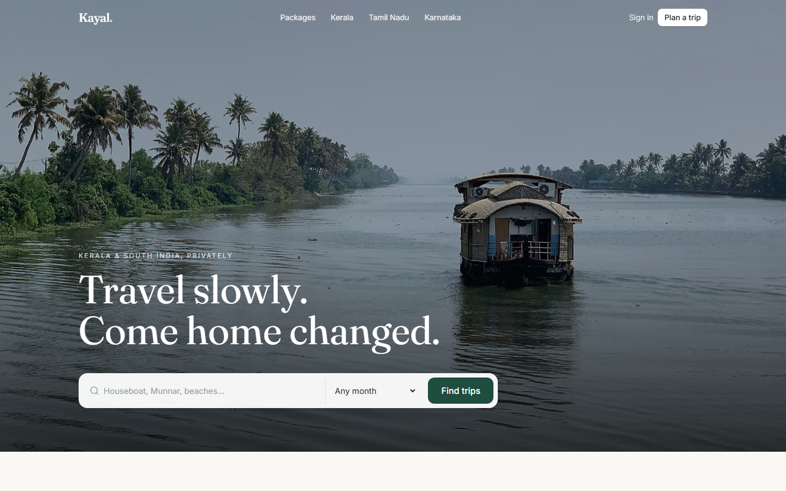
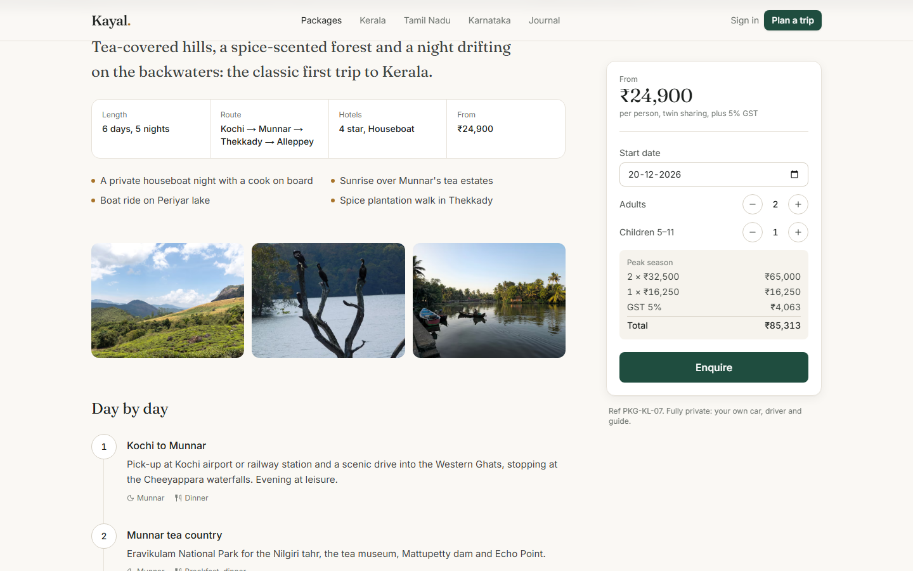
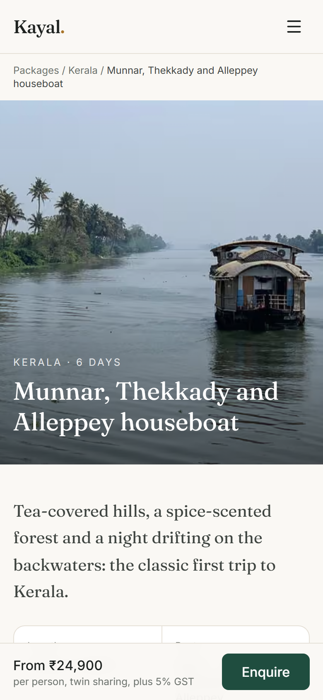
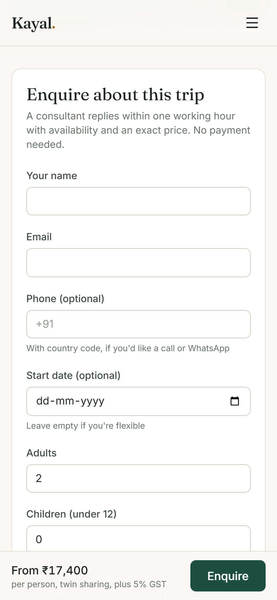
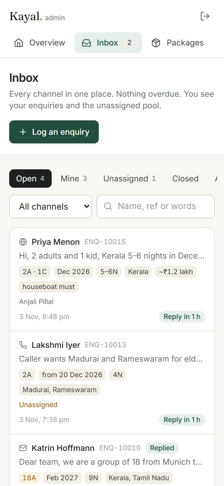
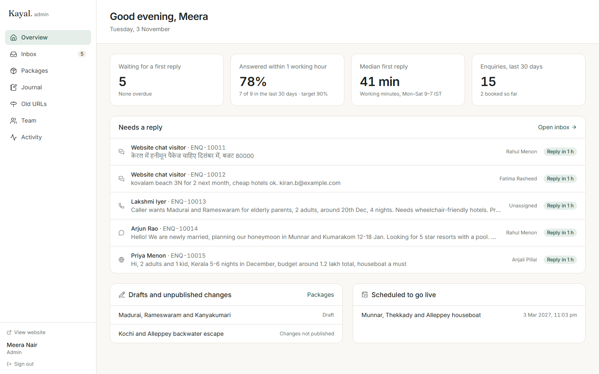
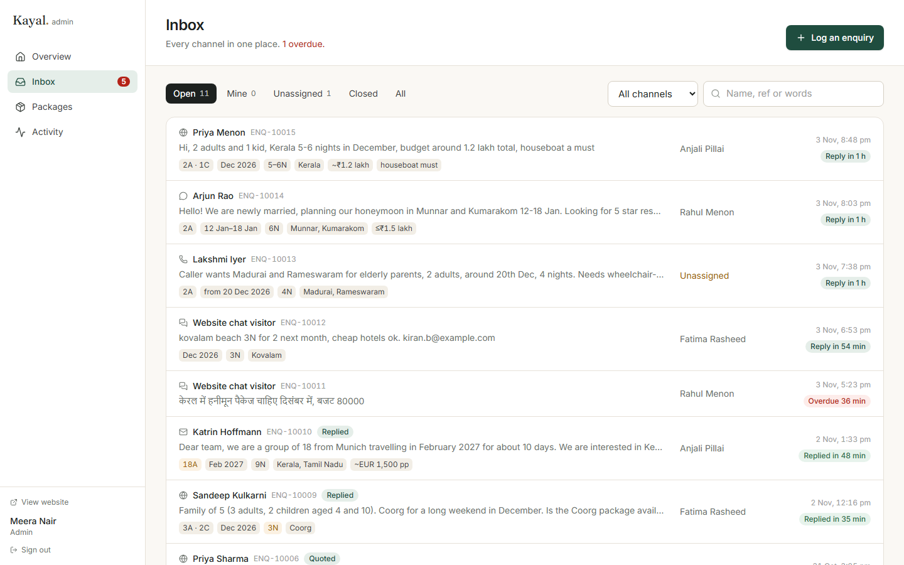
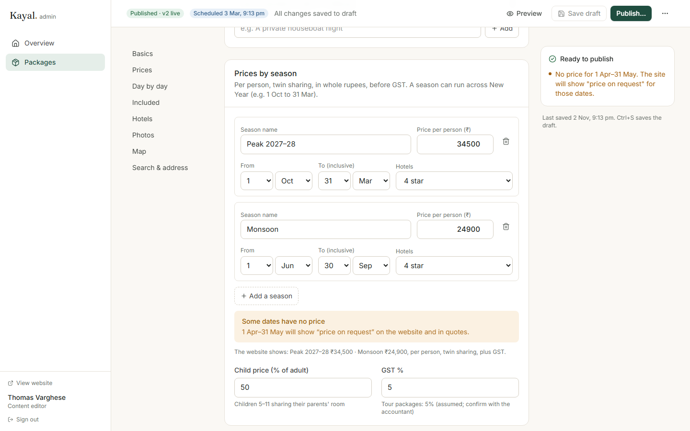
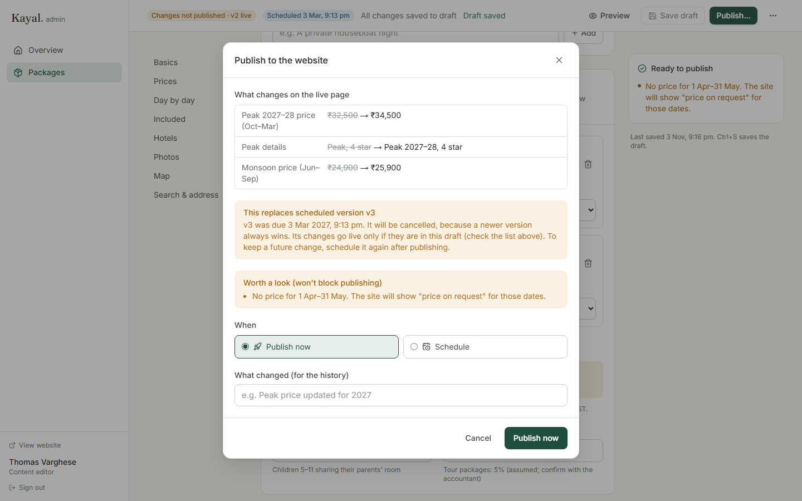
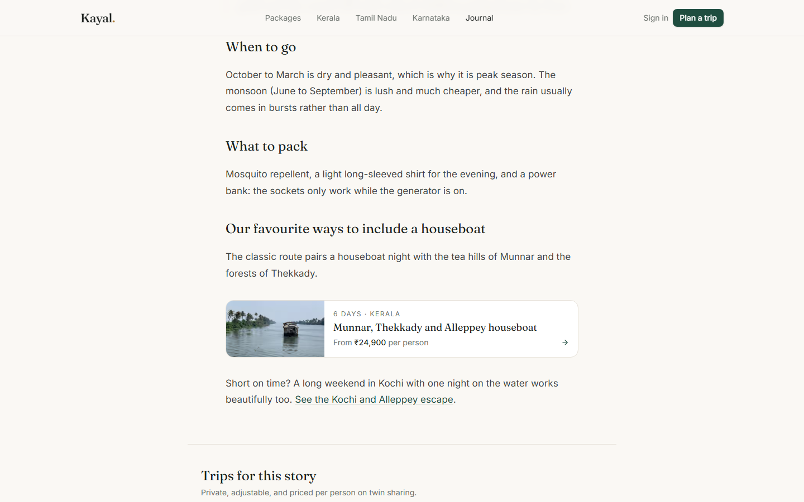
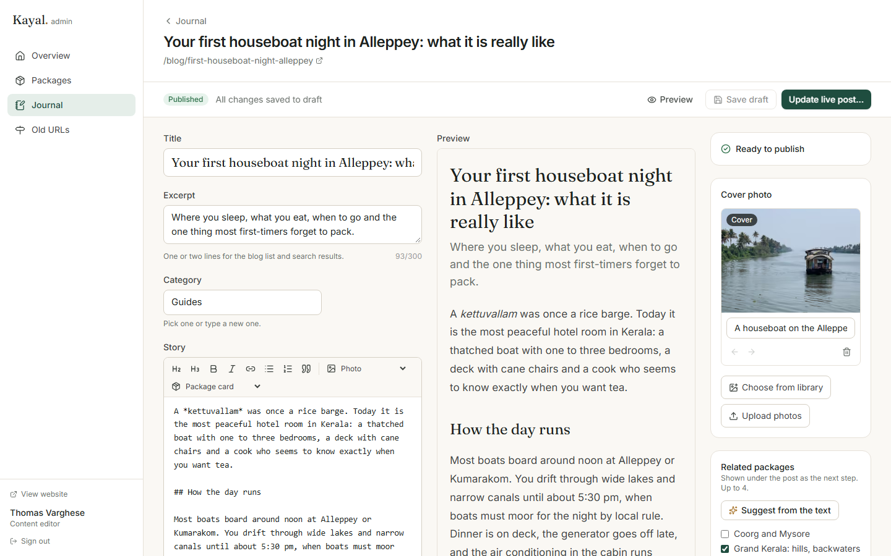
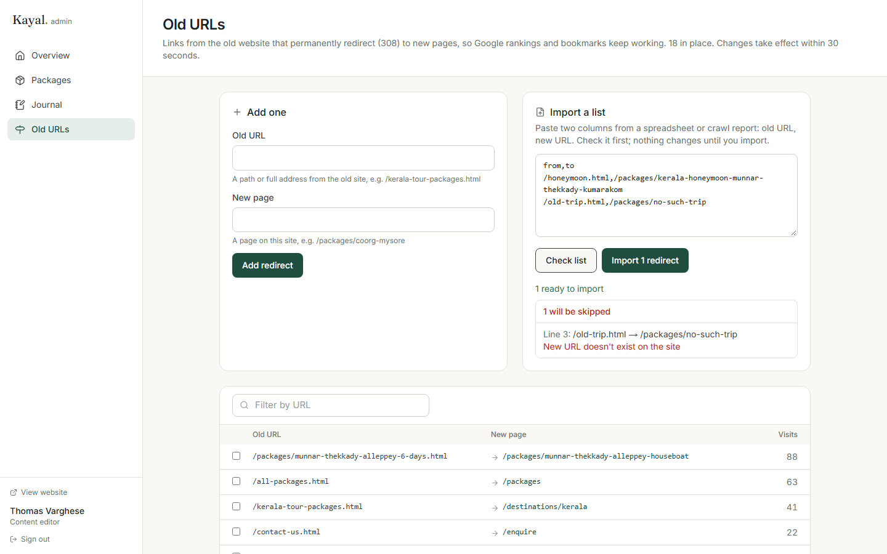
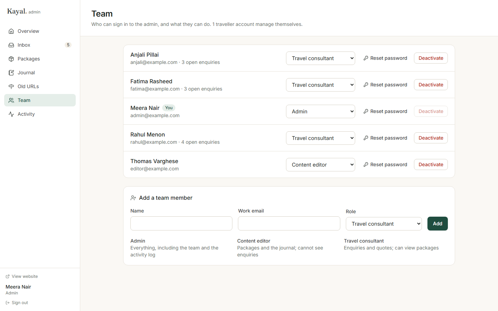
scripts/perf.mjs loads pages in Chromium as a Pixel 7 with Lighthouse’s “slow 4G” throttling (150 ms RTT, 1.6 Mbps) and a 4× CPU slowdown; median of three runs, production build:
| Page | Median LCP | Transferred |
|---|---|---|
| Home | 2.30 s | 538 KB |
| All packages | 1.93 s | 624 KB |
| Package page | 2.16 s | 547 KB |
| Destination (Kerala) | 2.22 s | 547 KB |
On the live deployment (Vercel and Turso, both in Mumbai, measured from India): with a typical 4G connection (9 Mbps, 60 ms added latency) and the same 4× CPU slowdown, the median LCP is 1.2–2.1 s (home 2.10 s, packages 1.81 s, package 1.34 s, destination 1.19 s). With the harsh slow-4G profile added on top of the real network, it is 2.4–3.1 s; that test effectively doubles the latency, so it is a worst case rather than the brief’s “4G”. Pages are served from Vercel’s cache; the proxy’s redirect check adds no measurable time.
Measuring led to two fixes that together took the package listing from 3.3 s to 2.0 s: the listing became a cached page with in-browser filtering, and card photos are now served at quality 60. A third finding: an entrance fade on the home headline kept the text invisible for over 1.5 s on slow loads, so it was removed. Leaflet maps load only when scrolled into view. Figures are measured with the redirect check in the proxy on every request. They come from a local server, so first-byte time on a CDN will differ, and single runs vary by a few hundred milliseconds.
.env.example lists names only; production refuses to start preview signing without APP_SECRET.| # | Assumption |
|---|---|
| A1 | Brand name “Kayal Holidays” (kayal: backwater in Malayalam) stands in for Company A. |
| A2 | PKG-KL-07 and PKG-SI-12 are as given (including PKG-SI-12 as a draft and KL-07 having no April–May price, shown as “On request”). Their itineraries, hotels and inclusions, and the other 8 packages, are invented sample data. |
| A3 | GST on tour packages is 5% of the package price, editable per package; confirm with the client’s accountant. |
| A4 | Children 5–11 sharing their parents’ room pay 50% of the adult price (editable per package); under-5s are free. No single supplement in this build. |
| A5 | The season is decided by the trip’s start date. |
| A6 | Working hours are Monday–Saturday, 09:00–19:00 IST, with no holiday calendar; the one-hour target counts working minutes only. |
| A7 | Auto-assignment goes to the active consultant with the fewest open enquiries; ties go to whoever was assigned least recently. |
| A8 | Foreign budgets convert at fixed assumed rates (USD 84, EUR 91, GBP 107), and the UI says so. |
| A9 | Without a date, suggestions price on the 15th of the requested month; without a party, 2 adults. |
| A10 | A WhatsApp message to the business counts as consent to reply on WhatsApp in that conversation; web and phone enquiries need explicit consent. |
| A11 | The 140 old URLs are not in the brief. The Old URLs screen imports them from a crawl; 18 representative mappings (with invented visit counts) are seeded to show it working. |
| A12 | Quotes are valid for 14 days. |
| A13 | Enquiries that do not lead to a booking are deleted after 12 months (stated in the privacy notice; deletion job not built). |
| A14 | Package codes follow PKG-<state>-<nn>; the web address is set from the title and locked after first publish. |
| A15 | Consultants see their own and unassigned enquiries; admins see all; editors see none. |
| A16 | Traveller accounts show only enquiries sent while signed in (no email verification in this build). |
| A17 | Photos are openly licensed Wikimedia Commons images, credited at /credits; the client would replace them with its own. |
| A18 | Email, WhatsApp and payments are simulated, as the brief allows: messages go to an outbox shown in the app. |
| A19 | The three journal posts are invented sample content. |
| A20 | New staff get a one-time password shown once to the admin, to pass on privately; there is no email invitation in this build. |
| A21 | Editors may manage old URLs (an SEO task); only admins manage the team. |
Repository structure: src/lib pure domain and AI logic with tests · src/server data access and services · src/app routes, pages and server actions · scripts seed, photos, perf and screenshots · e2e Playwright tests · drizzle SQL migrations.